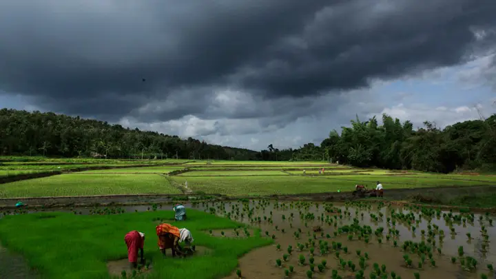
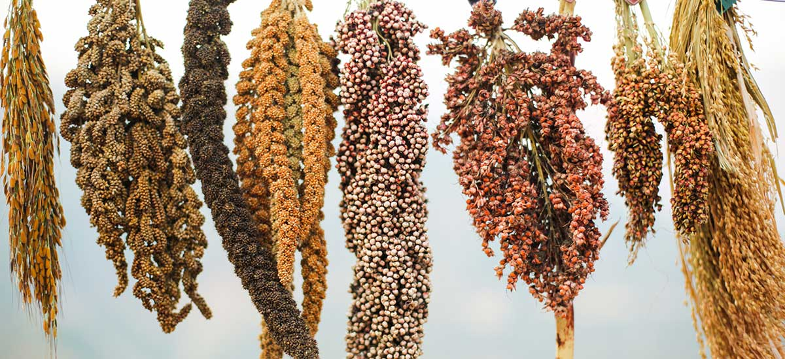

Uttarakhand In Monsoon:
In Monsoon, Uttarakhand becomes the heaven in the earth because of the rainy season. You will see the clouds under the mountains, and green mountain every where you look. In monsoon we do different kind of Ragi's weeding and, corn, harvest many types of vegitables, dal and many more. When the other states (like Uttarapradesh, Madhyapradesh, Maharashtra) struggles with the heat and summer we pahadi people enjoy the rain and the little cold weather do our daily life work.

The mountains still attract me from a distance. As a child, when I would look at a mountain or a high mound from a distance, it seemed as if those mountains and mounds were calling me. I sometimes galloped to the dry mountains of two or four miles. When I climbed on them and saw the surrounding surroundings in the distance, I really felt great wonder and joy. Then the question used to arise in my mind, the cold and green mountains that people used to talk about, go there in summer.

Diverse Culture and Enticing Cuisine In Uttarakhand:
Uttarakhand is a region famous for its diverse culture and enticing cuisine. Amongst the many regional specialties, Uttarakhand’s unique ragi Called Koda in local stands out due to its rich health benefits. Ragi, more widely referred to as finger millet, is an organic grain widely grown in Uttarakhand and is known to be exceptionally beneficial for human health.
Uttarakhand is well-known for its unique and organic ragi, also called finger millet. When compared to other grains, ragi stands out with its many health benefits which can help the body become stronger and function better. Ragi is a perfect source of essential vitamins and minerals, such as calcium, magnesium, zinc, phosphorus, iron and more.